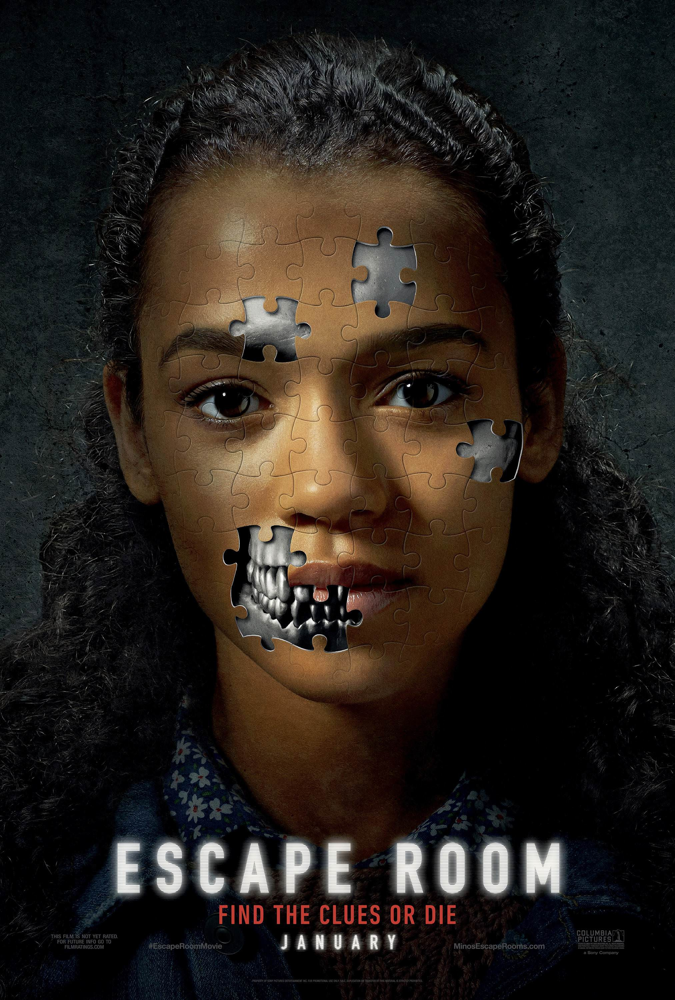
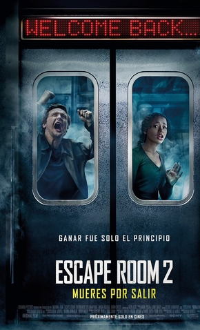

SCAPE ROOM : O JOGO
O primeiro filme scape room foi lançado em 7 de fevereiro de 2019 e o segundo em 16 de setembro de 2021.O primeiro filme Escape Room: O Jogo, seis estranhos, que passam por momentos complicados em suas respectivas vidas, acaba sendo misteriosamente convidados para um experimento inusitado.Eles são trancados em uma imersiva sala enigmática cheia de armadilhas, e ganharão uma grande quantia de dinheiro caso consigam sair. Mas quando percebem que os perigos são mais letais do que imaginavam, eles precisam agir rápido para desvendar as pistas que lhes são dadas e conseguir sobreviver.
A direção é de Adam Robitel, de Sobrenatural: A última Chave e A Possessão de Deborah Logan. Apesar do currículo bem voltado para o terror sobrenatural, Robitel já avisa do que o longa se trata: "Não é gore, não tem sangue. É realmente suspense para deixar o público tenso". O Diretor Adam Robitel deu uma entrevista para o site adorocinema que ainda não é um expert em jogos de fuga, mas que a equipe se empenhou ao máximo no desenvolvimento de cada sala. "Nós queríamos que cada quarto parecesse um filme diferente. O lobby vira um forno, então como podemos transformar o espaço? Cada detalhe foi muito bem planejado e o roteiro bem específico. Cada pista, de alguma forma, precisava abalar o psicológico dos jogadores", explicou.Robitel assume que é fã de Jogos Mortais, mas diz que seu longa é uma experiência à parte: "Com certeza nos inspiramos no filme, mas vemos 'Escape Room' como sendo uma montanha-russa única. Queríamos fazer um filme de gênero que fosse bonito, como a sala de bilhar em que está tudo ao contrário".

O diretor Adam Robitel, que retorna para a cadeira de direção de ‘Escape Room 2: Tensão Máxima’, falou um pouco sobre a sequência e revelou qual seria sua ideia original para o longa-metragem – mudando totalmente a narrativa final. “Queria fazer algo radicalmente diferenrte, para ser honesto, no começo. Queria fazer uma história de origem de vilão. Sabia que queria colocar a narrativa de vingança de Zoey e de Ben, mas queria fazer algo como os bastidores da criação dos jogos em cenas de pai e filha. O problema é que eu me vi dividido entre duas histórias que tinham muito conteúdo, muito a ser contado. Teria que funcionar como uma antologia. Era como se eu carregasse uma pedra montanha acima, sabe? Para tentar fazer funcionar”.No filme, seis pessoas se encontram presas em uma nova série de escape rooms, buscando o que elas têm em comum para sobreviver… e descobrindo que todos já jogaram esse jogo antes. Trata-se de um torneio para aqueles que já sobreviveram a outros jogos mortais.
O cineasta Adam Robitel usa o tempo que os personagens têm para desarmar as armadilhas – exemplificando: 10 minutos; depois dos quais a tal armadilha é finalizada. Claro, não existe uma sincronia perfeita, mas a ideia executada na sala da edição é eficaz no efeito, graças á ampla competência na realização dos cortes, que precisavam ser extremamente rápidos para encaixar, mas conseguem ainda assim, ser dinâmicos com a crescente do elemento de fatalidades da ambientação.

Conheça o diretor e os personagens
topo da página